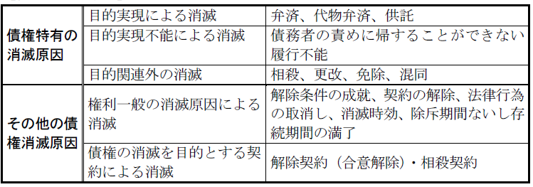

第４編 債権総論
第５章 債権の消滅
【債権の消滅類型】

第１節 弁済
Ⅰ 弁済の意義
：債務の本旨に従った給付を実現する債務者ないし第三者の行為
これにより債権は目的を達成して消滅する。
「履行」と同様の意味であるが、弁済は、債権の消滅という効果に、履行は、その実現過程に視点をおいた表現であるといえる。
Ⅱ 弁済の要件
弁済が有効となるためには、①弁済をなし得る者が、②弁済の受領権者に、③債務の本旨に適合した給付を実現することが必要である。
1. 債務者
債務者は弁済をしなければならない者であるから、弁済は債務者によってなされるのが通常である。債務者が債権者に債務の弁済をしたら、債権は消滅する（473条）。
2. 第三者弁済
：債務者以外の第三者による給付に弁済としての効果が認められること
(1) 原則
原則として弁済は、第三者もすることができる（474条１項）。なぜなら、債権者は給付によってもたらされる結果を受けることに利益を有する者であるから、通常、第三者の弁済は何ら債権者の利益を害さないからである。
ここでいう「第三者」とは、他人の債務を自己の名で弁済する者をいうので、債務者の履行補助者・代理人は含まれない。
ただし、この原則には以下の３つの例外がある。
(2) 第三者弁済が許されない場合
① 債務の性質がこれを許さないとき（474条４項）
② 当事者が第三者の弁済を禁止し、若しくは制限する旨の意思表示をしたとき（474条４項）
③ 正当な利益を有する者でない第三者で、債務者又は債権者の意思に反するとき（474条２項本文、３項本文）
(a) 債務の性質がこれを許さないとき（①）
ⅰ 他人が給付を代替することが許されない場合
ex．ミュージシャンが公演を行う債務
ⅱ 債権者の同意がなければ第三者によることが許されない場合
ex．雇用契約における労務（625条２項）、寄託契約における保管（658条２項）
(b) 当事者が第三者の弁済を禁止し、若しくは制限する旨の意思表示をしたとき(②）
契約によって生じた債務の場合は契約当事者が、単独行為による債務の場合はその行為者が、第三者の弁済を認めない旨の意思表示（又は合意）をした場合
(c) 正当な利益を有する者でない第三者で、債務者又は債権者の意思に反するとき（③）
ⅰ 正当な利益を有する者
ex．物上保証人、担保不動産の第三取得者、同一不動産の後順位抵当権者、借地上建物の賃借人（最判昭63.７.１）
ⅱ 正当な利益を有しない者
ex．債務者と親族関係・友人関係にあるにすぎない者
なお、債務者の意思に反することを知らなかった債権者が、その旨を立証
したときは、弁済は有効となる（474条２項）。また、第三者は、債権者の意思に反して弁済をすることはできないが（474条３項本文）、第三者が債務者の委託を受けて弁済をする場合において、そのことを債権者が知っていたときは、受領を拒絶することはできない（474条３項ただし書）。
1. 弁済受領権者
(1) 意義
弁済を受領することにより債権は消滅するので、債権者又は債権者から受領権限を与えられた者（ex．代理人・受任者）が、通常、弁済受領権者である。ただし、債権者であっても受領できない場合があり、債権者以外の者でも受領できる場合もある。
(2) 例外
(a) 債権者が、未成年者、成年被後見人、被保佐人であって、給付行為が法律行為である場合には、取り消されることがある（５条１項本文、２項、９条本文、13条１項１号、４項）。
また、その債権が差押えを受けた場合（481条１項）、破産手続開始の決定を受けた場合（破産法78条）、その債権の上に質権を設定した場合（366条参照）には弁済受領権限を失う。
(b) 法律の規定により受領権限を有する者がある。
ex．差押債権者（民執法155条参照）、破産管財人（破産法78条）、債権質権者（366条１項）、債権者代位権の行使者（423条１項）
(c) 受領権者としての外観を有する者（478条）、指図証券の所持人（520条の10）への弁済も有効とされる。
2. 受領権者としての外観を有する者に対する弁済
(1) 受領権者としての外観を有する者に対する弁済は、弁済者が善意かつ無過失の場合に限り有効となる（478条）。
(2) 趣旨
弁済受領権限のない者に対する弁済は原則として無効であるが、債権者らしい外観を呈する者を債権者と信じてする弁済を有効として、弁済における債務者を保護する必要がある。
(3) 要件
①受領権者としての外観を有する者に対する弁済であること、②弁済者の善意･無過失
真の権利者の帰責性は不要である。
(a) 受領権者としての外観を有する者に対する弁済であること（要件①）
ex．表見相続人、債権譲渡が無効な場合の債権の事実上の譲受人、無記名証券の持参人、預金証書と印鑑の持参人など
Ｑ 詐称代理人も受領権者としての外観を有する者に当たるか。
Ａ 肯定説（最判昭37.８.21・通説）
詐称代理人も受領権者としての外観を有する者に当たる。
（理由）
①受領権限一般への信頼の保護という478条の趣旨からすれば、債権者と名乗ったか、債権者の代理人と名乗ったかは重要でない。
②契約締結の場合は契約をするかしないかは自由であるのに対し、弁済の場合は債務者は弁済を強制されるので、表見代理では保護される範囲が狭くなり、債務者に酷である。
Ｂ 否定説
詐称代理人に対する弁済は、表見代理の規定によるべきである。
（理由）
債権者であるという外観への信頼ではなく、受領についての代理権が授与されているという外観への信頼が問題なのであるから、表見代理の問題とすべきである。
(b) 弁済者の主観的要件（要件②）
善意･無過失を要する。この「善意」とは、単に無権利者であることを知らないということだけでなく、真の権利者であると信じることを要すると解される。
(4) 効果
弁済が有効になる。債務者の債務は消滅し、第三者の弁済の場合には弁済による代位が生じる。
真正の債権者は債務者に履行を請求できなくなり、受領権者としての外観を有する者に対して不当利得返還請求権、損害賠償請求権を取得する。
(5) 二重譲渡と478条
債権が二重譲渡された場合の、劣後譲受人に対する弁済についても本条の適用がある。
判例は、債務者が無過失であるというためには、優先する債権譲受人の譲渡行為に瑕疵があるためその効力を生じないと誤信してもやむを得ない事情があるなど、劣後譲受人を真の債権者と信ずるにつき相当の理由のあることを必要とする（最判昭61.４.11）。
3. 弁済が無効な場合
478条等が適用されなければ受領権限を有しない者への弁済は無効である。
ただし、受領権者以外の者に対する弁済も、債権者がこれによって利益を得た限度で有効となる（479条）。
例えば、ＡがＢに、ＢがＣに対し債権を有している場合、Ｃが無権限者Ｄに弁済したが、Ｄが受け取った金でＡに対しＢの債務を弁済すれば、ＢがＡに対する債務を免れた限度でＣの弁済が有効になる。
4. 差押えを受けた債権の第三債務者の弁済
ＡのＢに対する債権をＡの債権者Ｃが差し押さえた場合のＢが「差押えを受 けた債権の第三債務者」である。Ｂは自己の債権者Ａに対しての弁済が禁止され（民執法145条1項）、ＢのＡに対する弁済は、Ｃに対抗することはできない。そして、Ｃは、その受けた損害の限度において更に弁済をすべき旨をＢに請求することができる（481条）。なお、ＢはＡに対して不当利得として弁済ししたものの償還を請求することとなる。
1. 弁済の場所
弁済をすべき場所については、契約・慣習により定まるが、それがないときは以下に従う。
① 特定物の引渡しでは、債権発生時にその物が存在した場所（484条１項前段）
② 特定物の引渡し以外では、債権者の現在の住所（484条１項後段・持参債務の原則）
③ 売買代金について、売買目的物と同時に支払うべきときは、その引渡しの場所（574条）
2. 弁済の時期（＝履行期、弁済期）
当事者の合意・法律の規定で決まる。
債務者は債権者を害さない限り期限の利益を放棄することができ（136条２項）、また、一定の事項が債務者に生じたときには、債務者は期限の利益を失う（137条）。
3. 弁済の費用
特約のない限り、債務者の負担である（485条本文）。
ただし、債権者が弁済の費用を増加させたときは、増加費用は債権者の負担となる（485条ただし書）。
4. 弁済の証拠
弁済がなされると債権は消滅するが、その証拠がないと、後日紛争が生じた場合に債務者は再度の請求を受けるおそれがあり、また、弁済者が求償ないし代位するときに不便である。そこで、民法は、弁済者に弁済の証明のための次の２つの権利を認めた。
(1) 受取証書の交付請求権
弁済をする者は受取証書の交付を請求できる（486条）。
「弁済と引換えに」と規定されているように、一部弁済の場合にも請求することができる。
弁済と受取証書交付は同時履行である。
(2) 債権証書の返還請求権
全額弁済者は、債権証書の返還を請求できる（487条）。
一部弁済の場合は債権証書にその旨を記載すべきことを請求することができると解される。
弁済と債権証書返還は同時履行でない。
5. 預金又は貯金の口座に対する払込による弁済
口座振込みによる弁済は払戻請求権取得時に効力が発生する（477条）。したがって、送金や入金記帳のミスがあった場合は弁済の効力は生じない。
Ⅲ 弁済の効果
弁済の主たる効果は、債務の消滅である。
1. 意義
：債務者Ａが同一の債権者Ｂに対して、同種の給付（ex.金銭の支払）を目的とする数個の債務を負担する場合（ex.100万円の貸金債務と50万円の貸金債務）、弁済として提供されたものが債務の全部を消滅させるのに足りない場合（ex.50万円の提供）、当該弁済をいずれの債務に充てるべきかを決定すること
2. 充当の順序
充当の方法は、第一次的に当事者の合意によりすることができる（490条）。この場合には、充当の順序に制限はない。その合意がない場合、第二次的に当事者の一方（弁済者→弁済受領者の順で）の指定に従う（488条１項、２項）。そして、当事者が指定しない場合又は指定が効力を失った場合には、法律の規定（488条４項）による。
(1) 指定充当（488条１項、２項、491条）
まず、弁済者が給付の時に、受領者に対する一方的意思表示によって指定する（488条１項、３項、491条）。
それがないときは弁済受領者が受領の時に指定するが、これに対して、弁済者が直ちに異議を述べれば、指定は効力を失い法定充当になる（488条２項、３項、４項、491条）。
(2) 法定充当（488条４項、491条）
① 弁済期にあるものとないものとでは、弁済期にあるものから充当する（488条４項１号、491条）。
② すべての債務が弁済期にあるか弁済期にないときは、債務者のために弁済の利益の多いものから充当する（488条４項２号、491条）。
③ 弁済の利益が等しいときには、弁済期が先に到来したもの又は先に到来すべきものから充当する（488条４項３号、491条）。
④ 以上でも順位が決まらない場合は、債務額に応じて充当する（488条４項４号、491条）。
3. 充当方法に対する制限
債務者が１個又は数個の債務につき、元本・利息・費用を支払うべきときは、費用・利息・元本の順で充当する（489条１項）。
この順序は、当事者の合意による充当で変更できる（490条）。しかし、489条は公平の観点から認められたものであるから、当事者の一方の指定で変更することはできない（大判大６.３.31）。
数個の債務があるときは、その費用相互間・利息相互間・元本相互間では、合意がなければ、指定充当がされ（489条２項、488条１項、２項）、指定がされない場合には法定充当の順序による（489条２項、488条４項）。
1. 意義
代位弁済者が債務者に対して取得する求償権を確保するために、弁済によって消滅するはずだった債権者の債務者に対する債権（以下「原債権」という。）及びその担保権を代位弁済者に移転させ、代位弁済者がその求償権の範囲内で原債権及びその担保権を行使することを認める制度（最判昭59.５.29）。
債務者としては弁済していない以上代位を認めても不利益でないし、債権者としても債権の満足を受けるので不利益はない。そこで、弁済者の求償権を確保する趣旨で認められた。
2. 種類
(1) 任意代位
(a) 意義
：弁済をするについて正当な利益を有しない者による代位
※ 「正当な利益」の意味は、次の法定代位を参照
(b) 要件
①弁済その他の行為によって債権者を満足させたこと
②弁済者が債務者に対して求償権を取得すること
※債務者の承諾は不要である。
(c) 対抗要件
任意代位による権利の移転は、法律上の移転であり債権譲渡ではないが、債務者や第三者が任意代位のあったことを知らずに弁済するなど、不測の損害を被る危険があることから、債権譲渡と同様に、通知・承諾を対抗要件とした（500条、467条）。
(2) 法定代位
(a) 意義
：弁済をするについて正当な利益を有する者が、その弁済によって当然に債権者に代位すること
(b) 要件
①弁済その他の行為によって債権者を満足させたこと
②弁済者が債務者に対して求償権を取得すること
※対抗要件は不要である。この点のみが、任意代位と異なる。
(c) 弁済について正当な利益を有する者
「正当な利益」とは、弁済をするについて法律上の利害関係があることをいい、親族関係があるにすぎないなど、事実上の利害関係は含まれない。
具体的には、①弁済をしなければ債権者から執行を受ける者、②弁済をしなければ債務者に対する自己の権利の価値を失う者とに分けられる。
①弁済をしなければ債権者から執行を受ける者
ex．保証人、連帯保証人、連帯債務者、不可分債務者、物上保証人、担保目的物の第三取得者
②弁済をしなければ債務者に対する自己の権利の価値を失う者
ex．後順位抵当権者、一般債権者（担保権が不利な時期に実行されるなどして、自らへの弁済額が減少する場合）
3. 代位の効果
代位者は求償権の範囲内で、債権の効力及び担保として債権者の有した一切の権利を行使することができる（501条１項）。
債権の効力として有した権利－損害賠償請求権・債権者代位権・詐害行為取消権など
担保として有した権利－物的担保・人的担保
※ 契約取消権・解除権は契約当事者たる地位に基づいて認められるものなので移転しない。
4. 一部代位
第三者により債権の一部のみが弁済された場合、代位者は、債権者の同意を得て弁済した価額に応じて債権者と共にその権利を行使することになる（502条１項）。
①一部代位者は、債権者と共同でなければ抵当権を実行できない（502条１項）。
②競落代金が債権者と一部弁済者の債権を満足させるに足りないときは、債権者が優先して配当を受ける（502条３項）。
5. 法定代位者相互の関係
(1) 保証人及び物上保証人と第三取得者
(a) 保証人及び物上保証人は担保目的物の第三取得者に対しては全額代位できる。
(b) 第三取得者は保証人及び物上保証人に対して代位できない（501条３項１号）。
なぜなら、債務者が担保不動産を譲渡すると保証人及び物上保証人の代位の範囲が限定されるのは不当であるし、第三取得者は債務者の負担を引き継ぐ者だからである。
なお、この「第三取得者」は、債務者から取得した者に限られ、物上保証人から取得した者を含まない（501条３項１号括弧書、５号）。
(2) 保証人相互間
自己の権利に基づいて他の保証人に対して求償をすることができる範囲内で他の保証人に代位できる（501条２項括弧書）。
(3) 第三取得者相互間
各不動産の価格に応じて他の第三取得者に代位できる（501条３項２号）。
(4) 物上保証人相互間
各財産の価格に応じて他の物上保証人に代位できる（501条３項３号）。
(5) 保証人・物上保証人間
頭数に応じて代位する。物上保証人が複数ある場合は、まず頭数に応じて保証人が負担する部分を除き、物上保証人相互間で各財産の価格に応じて負担する（501条３項４号）。
(6) 保証人が物上保証人を兼ねる場合の負担部分
＜判例＞ 最判昭61.11.27
「複数の保証人及び物上保証人の中に二重の資格をもつ者が含まれる場合における代位の割合は、民法501条但書４号、５号［現、３項３号、４号］の基本的な趣旨・目的である公平の理念に基づいて、二重の資格をもつ者も一人と扱い、全員の頭数に応じた平等の割合であると解するのが相当である。」
(7) 501条３項４号の代位の割合と異なる特約
保証人と物上保証人は、弁済による代位の割合について501条３項４号の代位の割合と異なる特約を結ぶことができる。かかる特約を当事者以外の者に対しても主張できるかについては争いがある。